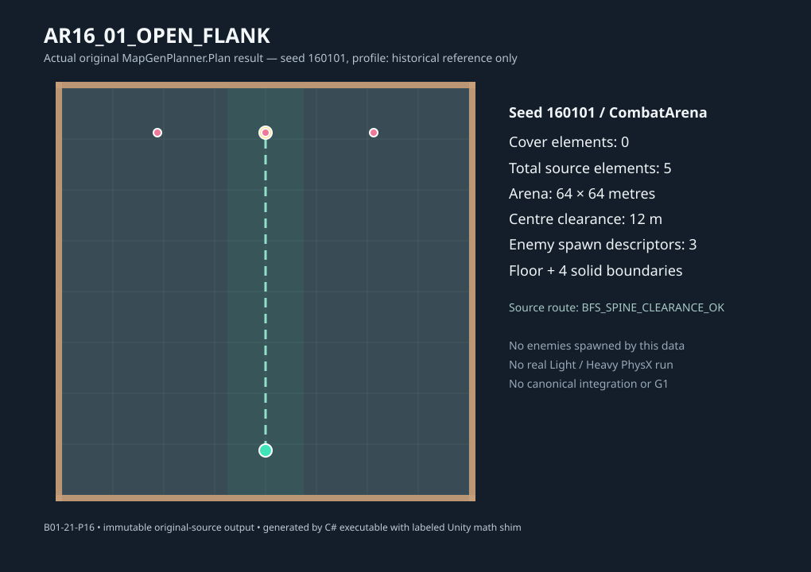
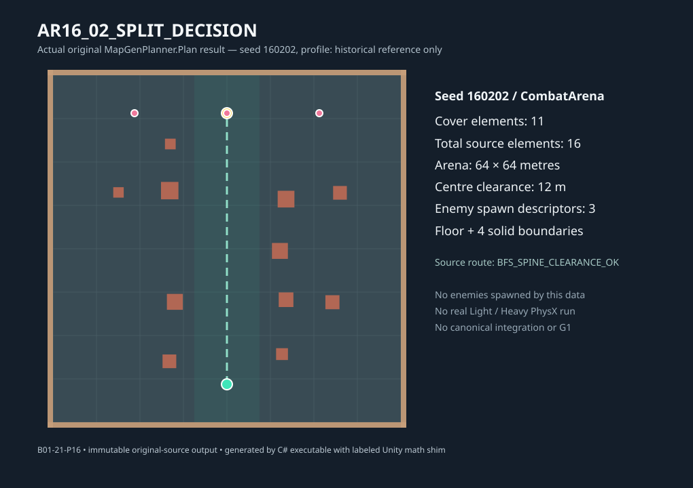
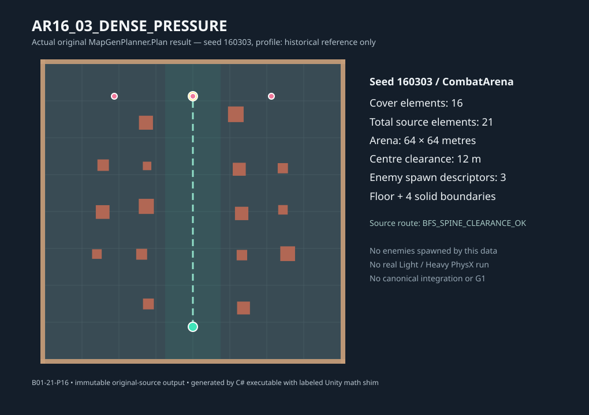

Wybierz wariant, porównaj osłony i geometrię wygenerowaną przez faktyczny MapGenPlanner.Plan. Seed i hash są powtarzalne. Przejazd fizyczny, AI i faktyczny build gry wymagają osobnych testów.
MapGenPlanner.Plan


